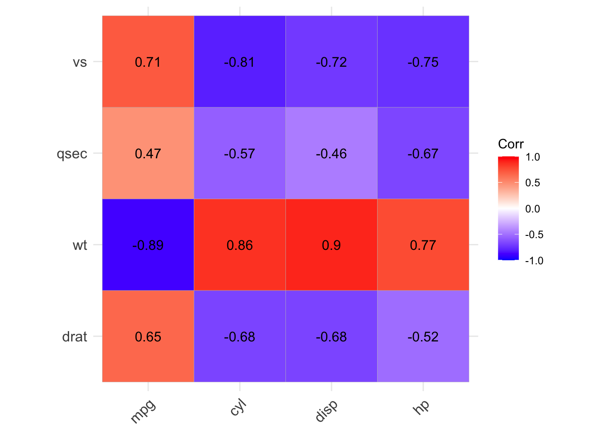
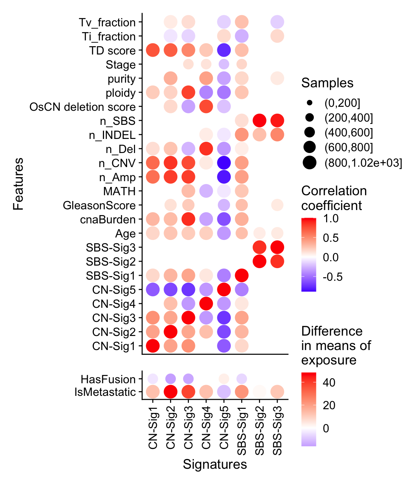

Chapter 9 Association Analysis and Visualization
9.1 General numeric association
For general numeric association, you can use show_cor() function.
data("mtcars")
p1 <- show_cor(mtcars)
p2 <- show_cor(mtcars,
x_vars = colnames(mtcars)[1:4],
y_vars = colnames(mtcars)[5:8]
)
p3 <- show_cor(mtcars, vis_method = "circle", p_adj = "fdr")
p1p1$cor
#> $cor_mat
#> mpg cyl disp hp drat wt qsec vs am gear carb
#> mpg 1.00 -0.91 -0.91 -0.89 0.65 -0.89 0.47 0.71 0.56 0.54 -0.66
#> cyl -0.91 1.00 0.93 0.90 -0.68 0.86 -0.57 -0.81 -0.52 -0.56 0.58
#> disp -0.91 0.93 1.00 0.85 -0.68 0.90 -0.46 -0.72 -0.62 -0.59 0.54
#> hp -0.89 0.90 0.85 1.00 -0.52 0.77 -0.67 -0.75 -0.36 -0.33 0.73
#> drat 0.65 -0.68 -0.68 -0.52 1.00 -0.75 0.09 0.45 0.69 0.74 -0.13
#> wt -0.89 0.86 0.90 0.77 -0.75 1.00 -0.23 -0.59 -0.74 -0.68 0.50
#> qsec 0.47 -0.57 -0.46 -0.67 0.09 -0.23 1.00 0.79 -0.20 -0.15 -0.66
#> vs 0.71 -0.81 -0.72 -0.75 0.45 -0.59 0.79 1.00 0.17 0.28 -0.63
#> am 0.56 -0.52 -0.62 -0.36 0.69 -0.74 -0.20 0.17 1.00 0.81 -0.06
#> gear 0.54 -0.56 -0.59 -0.33 0.74 -0.68 -0.15 0.28 0.81 1.00 0.11
#> carb -0.66 0.58 0.54 0.73 -0.13 0.50 -0.66 -0.63 -0.06 0.11 1.00
#>
#> $p_mat
#> mpg cyl disp hp drat wt qsec
#> mpg 0.000000e+00 6.112687e-10 9.380327e-10 1.787835e-07 1.776240e-05 1.293959e-10 1.708199e-02
#> cyl 6.112687e-10 0.000000e+00 1.802838e-12 3.477861e-09 8.244636e-06 1.217567e-07 3.660533e-04
#> disp 9.380327e-10 1.802838e-12 0.000000e+00 7.142679e-08 5.282022e-06 1.222320e-11 1.314404e-02
#> hp 1.787835e-07 3.477861e-09 7.142679e-08 0.000000e+00 9.988772e-03 4.145827e-05 5.766253e-06
#> drat 1.776240e-05 8.244636e-06 5.282022e-06 9.988772e-03 0.000000e+00 4.784260e-06 6.195826e-01
#> wt 1.293959e-10 1.217567e-07 1.222320e-11 4.145827e-05 4.784260e-06 0.000000e+00 3.388683e-01
#> qsec 1.708199e-02 3.660533e-04 1.314404e-02 5.766253e-06 6.195826e-01 3.388683e-01 0.000000e+00
#> vs 3.415937e-05 1.843018e-08 5.235012e-06 2.940896e-06 1.167553e-02 9.798492e-04 1.029669e-06
#> am 2.850207e-04 2.151207e-03 3.662114e-04 1.798309e-01 4.726790e-06 1.125440e-05 2.056621e-01
#> gear 5.400948e-03 4.173297e-03 9.635921e-04 4.930119e-01 8.360110e-06 4.586601e-04 2.425344e-01
#> carb 1.084446e-03 1.942340e-03 2.526789e-02 7.827810e-07 6.211834e-01 1.463861e-02 4.536949e-05
#> vs am gear carb
#> mpg 3.415937e-05 2.850207e-04 5.400948e-03 1.084446e-03
#> cyl 1.843018e-08 2.151207e-03 4.173297e-03 1.942340e-03
#> disp 5.235012e-06 3.662114e-04 9.635921e-04 2.526789e-02
#> hp 2.940896e-06 1.798309e-01 4.930119e-01 7.827810e-07
#> drat 1.167553e-02 4.726790e-06 8.360110e-06 6.211834e-01
#> wt 9.798492e-04 1.125440e-05 4.586601e-04 1.463861e-02
#> qsec 1.029669e-06 2.056621e-01 2.425344e-01 4.536949e-05
#> vs 0.000000e+00 3.570439e-01 2.579439e-01 6.670496e-04
#> am 3.570439e-01 0.000000e+00 5.834043e-08 7.544526e-01
#> gear 2.579439e-01 5.834043e-08 0.000000e+00 1.290291e-01
#> carb 6.670496e-04 7.544526e-01 1.290291e-01 0.000000e+00
p2
9.2 Comprehensive association
For comprehensive association analysis including both continuous and categorical variables, there are several functions available in sigminer:
get_sig_feature_association().get_tidy_association().show_sig_feature_corrplot().
Currently, I haven’t provided a proper example dataset for showing usage of all functions above (please read their documentation), here only the tidy dataset from our study (Wang et al. 2020) is given to show the plot function.
# The data is generated from Wang, Shixiang et al.
load(system.file("extdata", "asso_data.RData",
package = "sigminer", mustWork = TRUE
))
p <- show_sig_feature_corrplot(tidy_data.seqz.feature, p_val = 0.05)
#> Warning: Problem with `mutate()` input `gg`.
#> ℹ Using size for a discrete variable is not advised.
#> ℹ Input `gg` is `purrr::map2(.data$data, .data$type, .plot_cor)`.
#> ℹ The error occurred in group 1: type = "ca".
#> Warning: Using size for a discrete variable is not advised.
#> Warning: Problem with `mutate()` input `gg`.
#> ℹ Using size for a discrete variable is not advised.
#> ℹ Input `gg` is `purrr::map2(.data$data, .data$type, .plot_cor)`.
#> ℹ The error occurred in group 2: type = "co".
#> Warning: Using size for a discrete variable is not advised.
p
References
Wang, Shixiang, Huimin Li, Minfang Song, Zaoke He, Tao Wu, Xuan Wang, Ziyu Tao, Kai Wu, and Xue-Song Liu. 2020. “Copy Number Signature Analyses in Prostate Cancer Reveal Distinct Etiologies and Clinical Outcomes.” medRxiv. https://doi.org/10.1101/2020.04.27.20082404.